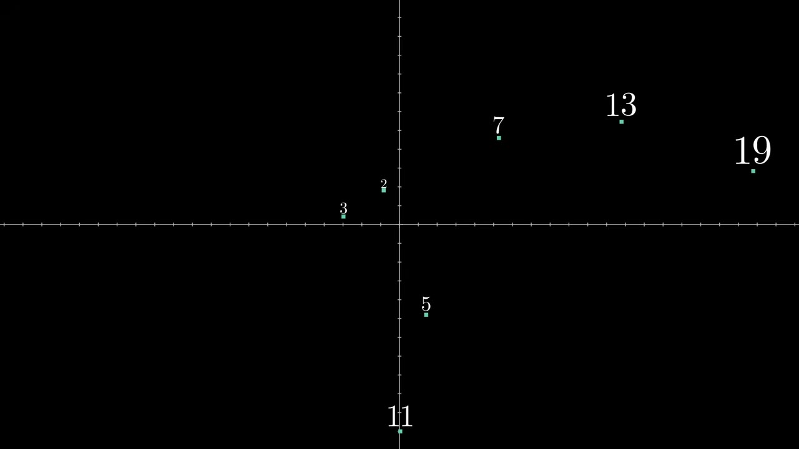
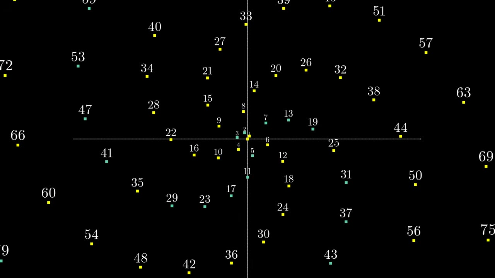
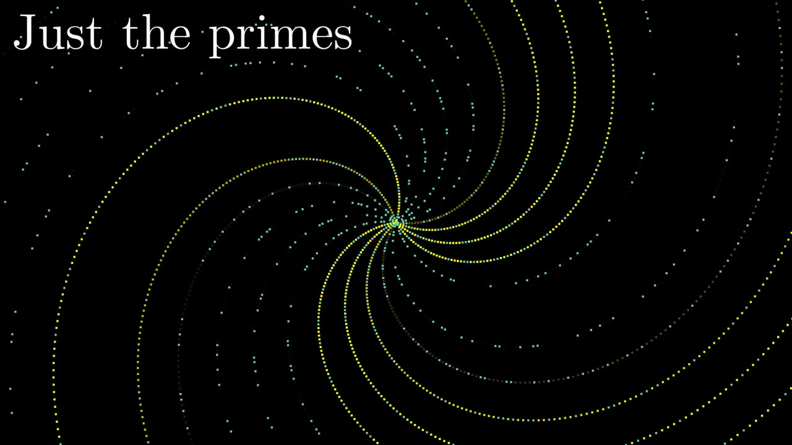
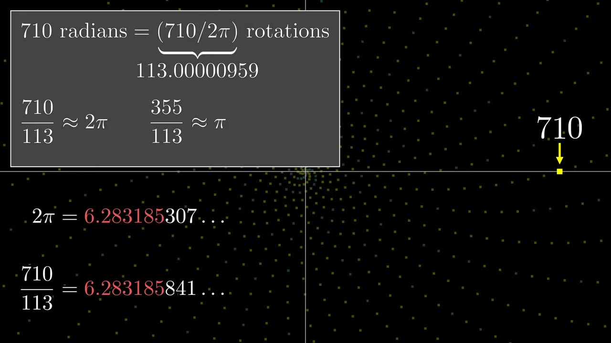
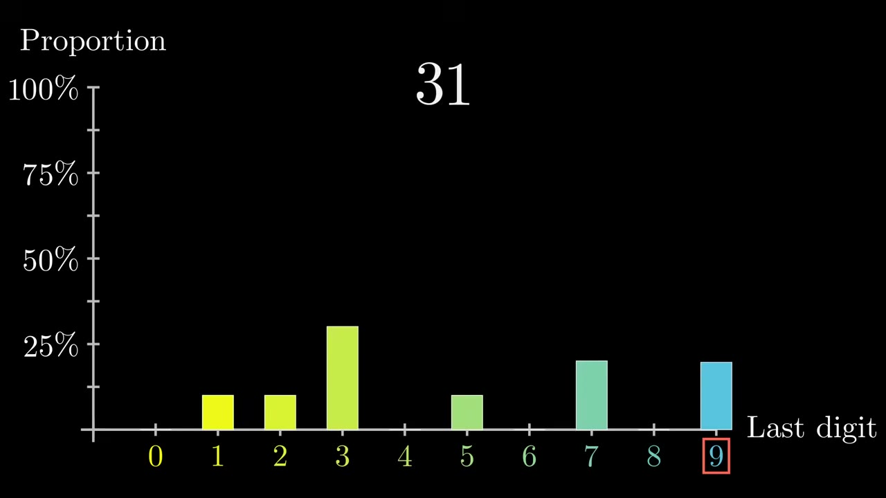
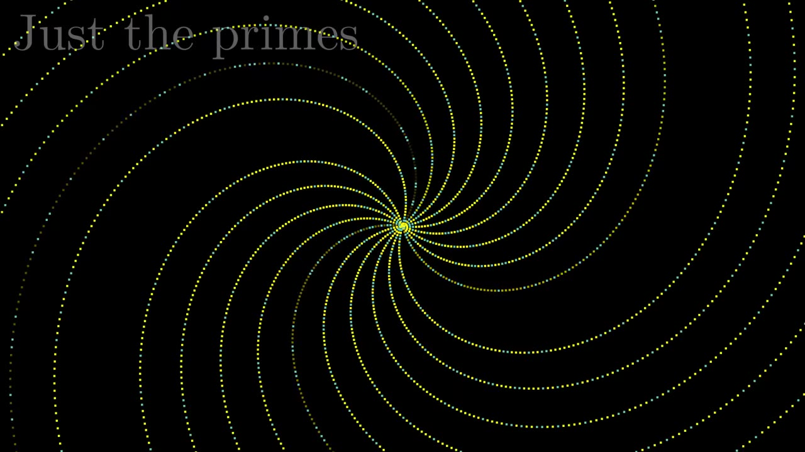

Plot prime numbers as polar coordinates and something unexpected appears — golden spirals, then straight rays, all governed by rational approximations of 2π and a 19th-century theorem about primes.
Watch on YouTubePlot every prime number p as a point at distance p and angle p radians in polar coordinates. What you get is a spiral pattern — clean, galactic, and completely unexplained by the primes themselves.

Zoom into the smaller-scale spirals. There are six arms, each corresponding to a residue class mod 6 — numbers sharing the same remainder when divided by 6. But prime numbers can only live in two of them: those that are 1 or 5 above a multiple of 6. All the others are ruled out by basic divisibility.

Zoom further. 44 radians is just barely above 7 full turns — the famous 22/7 ≈ π approximation at work. The arms are now residue classes mod 44. But primes eliminate many of them: evens (residues 0, 2, 4, …), multiples of 11 (residues 11, 33). What remains are exactly the numbers co-prime to 44 — countable with Euler's totient function:
φ(44) = 20
Those 20 surviving classes each get a spiral arm.

Go even farther out. 710 radians is incredibly close to 113 full turns — making 355/113 one of the best rational approximations of π you'll find. The spirals now look like straight rays.

The 280 rays are φ(710) — the residue classes mod 710 that don't share factors with 710 (factors: 2, 5, 71). Primes can't live in the eliminated classes. But within each surviving class, the primes appear evenly.
Primes seem to be randomly distributed within each of those arms.
This is the deep part. Primes are equidistributed among the residue classes co-prime to n — each of the φ(n) classes gets its fair share. Dirichlet proved this in 1837 using complex analysis, bridging discrete number theory with continuous calculus in a way that was then — and still is — unexpected.

n, primes are asymptotically equally distributed among the φ(n) residue classes that are co-prime to n. First proved by Dirichlet in 1837.Plotting (p, p) in polar coordinates is arbitrary. The spirals come from integer arithmetic approximating 2π, not from anything intrinsic to the primes. But that arbitrary play — the kind of curiosity sparked by a Math Stack Exchange question — led to one of the crowning jewels of analytic number theory.

What it means for a piece of math to be important and deep is that it connects to many other topics. So even an arbitrary exploration of numbers, as long as it's not too arbitrary, has a chance of stumbling into something meaningful.— Grant Sanderson
Numbers sharing the same remainder when divided by n — each becomes a spiral arm in polar plot
Count of integers from 1 to n that are co-prime to n — determines how many arms survive prime filtering
22/7 → 20 arms; 355/113 → 280 rays. Better approximations = more, straighter rays
Primes distribute equally among surviving residue classes — proved via complex analysis, 1837